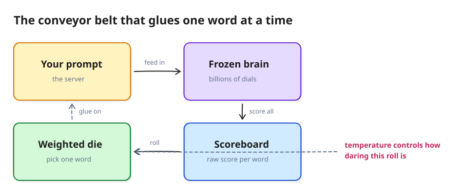

What an LLM actually is
Explain it like I'm 12: The world's fastest one-word relay game
Imagine you are playing a game with a friend who has read every book in the school library. You write two words on a slip of paper: the server.
Your friend is only allowed to write one single word on the slip and hand it back. They look at the server, quickly score every word in the dictionary, write crashed at the end, and slide the paper back across the desk.
Now the slip says the server crashed. Here is the secret: your friend immediately gets amnesia about why they picked crashed. For the next word, they pick up the slip (the server crashed) from scratch, score the entire dictionary all over again, and write because.
How does the game ever end? Inside the dictionary sits a special invisible finish-line word called <|eos|> (End of Sequence). At every single tick, <|eos|> competes on the scoreboard alongside normal words. The moment the weighted die lands on <|eos|>, the relay stops and hands you the finished reply.
That loop — score every possible next piece of text, pick one, glue it onto the end, repeat until <|eos|> — is autoregressive next-token prediction, and it is literally the entire outer loop of every modern large language model.

Under the hood, modern LLMs don't recompute earlier tokens from scratch on every tick — they cache each past token's Key and Value attention matrices (the KV cache) so generating token #500 only runs a forward pass for token #499 against the cached history. Mathematically, though, the output distribution is identical to re-reading the entire slip.
Why it answers your question instead of continuing it (Pre-Training → Post-Training)
Wait — beginners always ask the sharpest follow-up question right here: 'If an LLM is just guessing the next word from internet text, why does it answer What is the capital of France? instead of continuing with 2. What is the capital of Spain? like a quiz worksheet?'
Because a finished AI assistant goes through three distinct stages before its dials are frozen into a read-only file:
- Pre-Training (Base Model): The model reads trillions of tokens of web text, code, and books, nudging billions of internal number dials (parameters) to minimize next-token prediction error. A raw Base Model really WOULD continue your question with more quiz questions!
- Post-Training (SFT + RLHF / RLVR): Engineers wrap conversations in a structured chat template (
<|user|> ... <|assistant|>) and train the model on curated Q&A examples (Supervised Fine-Tuning), followed by Reinforcement Learning (human preference feedback or verifiable rewards on math/code) so that the highest-scoring tokens right after<|assistant|>are helpful, truthful answers ending with<|eos|>. - Inference (Frozen Weights): When training finishes, those billions of numbers (weights) are saved to disk and glued shut. During your chat (inference), your prompt passes through the frozen weights without changing a single dial — which is why opening a brand-new chat tomorrow starts with zero memory of you.

A 70B-parameter model in BF16 precision is literally ~140 GB of frozen 16-bit floats (or ~35–40 GB in 4-bit quantization). Because weights are immutable at inference time, all 'in-session learning' happens strictly inside the input prompt (in-context learning), never by updating model weights.
Inside the scoreboard: Logits, Softmax, Temperature & Top-P
If the weights are frozen, why can the exact same prompt produce five different replies? Because the neural network does not output a word — it outputs a raw scoreboard of logits across its entire vocabulary (100,000+ tokens), and a tiny sampler turns that scoreboard into a roll of a weighted die.
Trace the exact numbers from our Python lab after the server (crashed: 3.2, responded: 2.9, timed: 2.4, melted: 0.4, danced: -1.5):
- Scale by Temperature (
z / T): Divide every raw logit by temperature. Dividing by0.2multiplies every gap by5×(3.2 - 2.9 = 0.3stretches to1.5), making the leader crush the runner-up. Dividing by1.8shrinks gaps so underdogs rise. - Numerically Stable Softmax: Raw logits can be negative (
-1.5). Softmax appliese^(z_i - max_z)and divides by the sum so all entries sit in[0, 1]and total100%. Subtractingmax_zdoesn't change a single percentage, yet preventsmath.exp()from overflowing toInfinityon huge logits. - Watch the shift (
Figure 2): At Temp0.2,crashedgrabs80.6%anddanceddrops to0.0%. At Temp1.0,crashedis44.2%andrespondedis32.8%. At Temp1.8,dancedclimbs to2.6%. - Trim the crazy tail with Top-P (Nucleus Sampling): On a real 100,000-word vocabulary, even a
0.001%tail adds up to bizarre hallucinations at high temperature. Top-P (0.90) sorts tokens from highest to lowest, keeps only the smallest top group summing to90%, deletes the weird tail (dancedvanishes to0%!), and re-normalizes the survivors.

Production nuance: even at temperature = 0.0 (greedy argmax), cloud LLM APIs are NOT 100% bitwise deterministic! GPU floating-point reduction order across dynamic server batches (and Mixture-of-Experts capacity routing) can flip ties between near-equal logits. Treat temperature = 0 as 'low variance', never as a cryptographic hash.
The Snowball Trap: How forward-only prediction breaks real production prompts
Once you truly internalize the one-word conveyor belt, you immediately spot the #1 mistake developers ship in production.
Suppose a team writes a classifier prompt: 'Output YES or NO on line 1, then explain your reasoning on line 2.'
Imagine the true answer is NO, so the scoreboard gives NO 75% and YES 25%. At temperature = 1.0, one in four calls rolls the 25% underdog and emits YES on token 1.
Now YES is glued onto the slip of paper! On token 2, the model reads Answer: YES. Explanation: and asks: what tokens statistically follow an answer that already declared YES? Because the conveyor belt has no backspace key, it is trapped into rationalizing a wrong verdict.
The pro fix (Reason-Before-Verdict): Always put your structured scratchpad or `reasoning JSON field before the final verdict field. By the time the die rolls for YES or NO, the evidence is already sitting on the prompt slip — and that exact insight is why modern reasoning models (o3, DeepSeek-R1, Claude extended thinking) spend tokens thinking before emitting the final answer.
Common Trap: Asking for { "verdict": "PASS/FAIL", "reason": "..." } in JSON! JSON keys are generated left-to-right, so putting verdict before reason forces the model to guess blind before writing a single word of analysis. Flip the schema to { "reason": "...", "verdict": "PASS/FAIL" }.
Plain-English Jargon Decoder
Hands-On Python Lab: Build the 60-line Autoregressive Loop: Softmax, Temperature, Top-P & Stop Token
See exact softmax probabilities across Temp 0.2/1.0/1.8, watch Top-P (0.90) chop off the weird tail ('danced'), and verify how <|eos|> terminates generation while Temp 0.0 gives 1/5 unique outputs vs Temp 1.0's 5/5 branching runs.
=== STEP 1: Raw logits vs probabilities after (the server) ===
Temp 0.2 -> crashed: 80.6%, responded: 18.0%, timed: 1.5%, melted: 0.0%, danced: 0.0%
Temp 1.0 -> crashed: 44.2%, responded: 32.8%, timed: 19.9%, melted: 2.7%, danced: 0.4%
Temp 1.8 -> crashed: 36.1%, responded: 30.5%, timed: 23.1%, melted: 7.6%, danced: 2.6%
=== STEP 2: Top-P (Nucleus = 0.90) cuts off the weird tail at Temp 1.8 ===
Temp 1.8 (no Top-P): crashed: 36.1%, responded: 30.5%, timed: 23.1%, melted: 7.6%, danced: 2.6%
Temp 1.8 (Top-P = 0.90): crashed: 37.1%, responded: 31.4%, timed: 23.8%, melted: 7.8%
=== STEP 3: 5 runs at temperature = 0.0 (Greedy decoding + <|eos|> stop) ===
Run 1: the server crashed because memory exhausted <|eos|>
Run 2: the server crashed because memory exhausted <|eos|>
Run 3: the server crashed because memory exhausted <|eos|>
Run 4: the server crashed because memory exhausted <|eos|>
Run 5: the server crashed because memory exhausted <|eos|>
Unique outputs at temp 0.0: 1 / 5
=== STEP 4: 5 runs at temperature = 1.0 (Sampling + Top-P 0.95) ===
Run 1: the server responded in twelve milliseconds and recovered
Run 2: the server crashed because memory leaked <|eos|>
Run 3: the server timed out after five and then
Run 4: the server crashed because disk <|eos|>
Run 5: the server timed out after thirty then <|eos|>
Unique outputs at temp 1.0: 5 / 5"""Pure-Python Next-Token Prediction, Temperature, Top-P & Stop-Token Lab (l0-what-is-an-llm).
Demonstrates the exact output stage of every autoregressive LLM:
1. Takes the current token sequence (context).
2. Produces raw unnormalized scores (logits) over its vocabulary — including `<|eos|>`.
3. Scales logits by temperature and runs numerically stable softmax (`z - max(z)`).
4. Applies Top-P (nucleus) filtering to trim low-probability tail tokens.
5. Samples one next token, appends it to the prompt, and repeats until `<|eos|>`.
Zero external dependencies (Python 3 stdlib only).
"""
from __future__ import annotations
import math
import random
EOS = "<|eos|>"
# Pre-trained toy logit table conditioned on the last two tokens.
# In a real 70B LLM, these logits come from ~80 transformer layers multiplying frozen weights.
LOGIT_TABLE: dict[tuple[str, str], dict[str, float]] = {
("the", "server"): {"crashed": 3.2, "responded": 2.9, "timed": 2.4, "melted": 0.4, "danced": -1.5},
("server", "crashed"): {"because": 3.6, "after": 2.5, "at": 1.8, EOS: 0.9},
("server", "responded"): {"in": 3.4, "with": 2.8, "after": 1.7, EOS: 1.1},
("server", "timed"): {"out": 4.5, "at": 1.1, "twice": 0.8},
("crashed", "because"): {"memory": 3.3, "traffic": 2.9, "disk": 2.1, "aliens": -2.0},
("crashed", "after"): {"ten": 3.0, "heavy": 2.7, "midnight": 2.0},
("responded", "in"): {"twelve": 3.1, "two": 2.8, "forty": 2.2},
("responded", "with"): {"valid": 3.2, "stale": 2.6, "empty": 2.1},
("timed", "out"): {"after": 3.5, "during": 2.7, EOS: 2.2},
("because", "memory"): {"exhausted": 3.8, "leaked": 3.1, "spiked": 2.4},
("because", "traffic"): {"doubled": 3.5, "spiked": 3.2, "surged": 2.5},
("after", "ten"): {"seconds": 3.9, "requests": 2.8, "retries": 2.3},
("in", "twelve"): {"milliseconds": 4.2, "seconds": 2.1},
("with", "valid"): {"json": 3.9, "headers": 2.6, "bytes": 2.0},
("out", "after"): {"thirty": 3.4, "five": 3.0, "three": 2.4},
}
DEFAULT_LOGITS: dict[str, float] = {EOS: 3.4, "and": 2.1, "then": 1.9, "recovered": 2.4}
def softmax(logits: dict[str, float], temperature: float) -> dict[str, float]:
"""Turn raw logit scores into probabilities summing to 1.0 (numerically stable)."""
if temperature <= 0:
best_token = max(logits.items(), key=lambda kv: kv[1])[0]
return {k: (1.0 if k == best_token else 0.0) for k in logits}
scaled = {k: v / temperature for k, v in logits.items()}
# Subtract max(scaled) so math.exp() never overflows to Infinity on large logits
max_logit = max(scaled.values())
exps = {k: math.exp(v - max_logit) for k, v in scaled.items()}
total = sum(exps.values())
return {k: v / total for k, v in exps.items()}
def apply_top_p(probs: dict[str, float], top_p: float = 1.0) -> dict[str, float]:
"""Nucleus sampling: keep the smallest set of top tokens whose cumulative prob >= top_p."""
if top_p >= 1.0:
return probs
ranked = sorted(probs.items(), key=lambda kv: -kv[1])
kept: dict[str, float] = {}
cum = 0.0
for tok, p in ranked:
kept[tok] = p
cum += p
if cum >= top_p:
break
total = sum(kept.values())
return {k: v / total for k, v in kept.items()}
def sample_token(probs: dict[str, float], rng: random.Random) -> str:
"""Roll the weighted die according to the probability distribution."""
r = rng.random()
cumulative = 0.0
for token, p in probs.items():
cumulative += p
if r <= cumulative:
return token
return list(probs.keys())[-1]
def generate(
prompt: list[str],
max_steps: int,
temperature: float,
rng: random.Random,
top_p: float = 1.0,
) -> list[str]:
"""Autoregressive loop: predict one token, append to context, stop on <|eos|>."""
tokens = list(prompt)
for _ in range(max_steps):
context_key = (tokens[-2], tokens[-1])
logits = LOGIT_TABLE.get(context_key, DEFAULT_LOGITS)
probs = apply_top_p(softmax(logits, temperature=temperature), top_p=top_p)
next_tok = sample_token(probs, rng)
tokens.append(next_tok)
if next_tok == EOS:
break
return tokens
def main() -> None:
prompt = ["the", "server"]
first_logits = LOGIT_TABLE[("the", "server")]
print("=== STEP 1: Raw logits vs probabilities after (the server) ===")
for temp in (0.2, 1.0, 1.8):
probs = softmax(first_logits, temperature=temp)
top_str = ", ".join(f"{tok}: {p*100:5.1f}%" for tok, p in sorted(probs.items(), key=lambda x: -x[1]))
print(f"Temp {temp:3.1f} -> {top_str}")
print("\n=== STEP 2: Top-P (Nucleus = 0.90) cuts off the weird tail at Temp 1.8 ===")
raw_hot = softmax(first_logits, temperature=1.8)
trimmed_hot = apply_top_p(raw_hot, top_p=0.90)
print(" Temp 1.8 (no Top-P): ", ", ".join(f"{k}: {v*100:4.1f}%" for k, v in sorted(raw_hot.items(), key=lambda x: -x[1])))
print(" Temp 1.8 (Top-P = 0.90):", ", ".join(f"{k}: {v*100:4.1f}%" for k, v in sorted(trimmed_hot.items(), key=lambda x: -x[1])))
print("\n=== STEP 3: 5 runs at temperature = 0.0 (Greedy decoding + <|eos|> stop) ===")
greedy_runs = set()
for i in range(5):
rng = random.Random(100 + i)
out = " ".join(generate(prompt, max_steps=6, temperature=0.0, rng=rng))
greedy_runs.add(out)
print(f" Run {i+1}: {out}")
print(f"Unique outputs at temp 0.0: {len(greedy_runs)} / 5")
print("\n=== STEP 4: 5 runs at temperature = 1.0 (Sampling + Top-P 0.95) ===")
sampled_runs = set()
for i in range(5):
rng = random.Random(42 + i * 7)
out = " ".join(generate(prompt, max_steps=6, temperature=1.0, rng=rng, top_p=0.95))
sampled_runs.add(out)
print(f" Run {i+1}: {out}")
print(f"Unique outputs at temp 1.0: {len(sampled_runs)} / 5")
if __name__ == "__main__":
main()